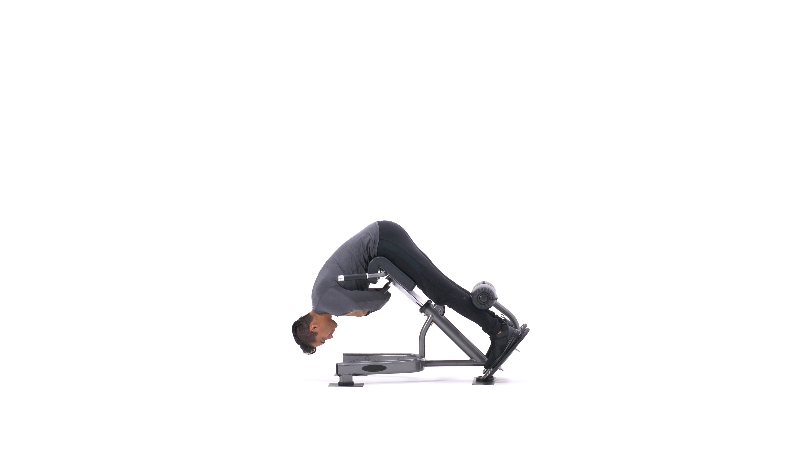
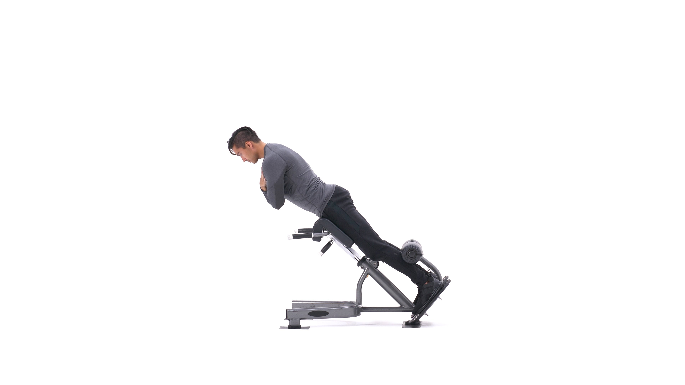

The back extension is an exercise used to build lower back strength that also targets the hamstrings and glutes. It is often performed on a 45-degree bench with the feet anchored. Unweighted back extensions are often performed for high reps, such as 15-20 reps or more, but the movement can also be performed with added weight in lower rep ranges, such as 8-12 reps per set.
1. Lie face down on a hyperextension bench, tucking your ankles securely under the footpads.
2. Adjust the upper pad if possible so your upper thighs lie flat across the wide pad, leaving enough room for you to bend at the waist without any restriction.
3. With your body straight, cross your arms in front of you (my preference) or behind your head. This will be your starting position. Tip: You can also hold a weight plate for extra resistance in front of you under your crossed arms.
4. Start bending forward slowly at the waist as far as you can while keeping your back flat. Inhale as you perform this movement. Keep moving forward until you feel a nice stretch on the hamstrings and you can no longer keep going without a rounding of the back. Tip: Never round the back as you perform this exercise. Also, some people can go farther than others. The key thing is that you go as far as your body allows you to without rounding the back.
5. Slowly raise your torso back to the initial position as you inhale. Tip: Avoid the temptation to arch your back past a straight line. Also, do not swing the torso at any time in order to protect the back from injury.
5. Repeat for the recommended amount of repetitions.
Variations: This exercise can also be performed without a hyperextension bench, but in this case you will need a spotter. Also, a similar exercise to this one is the good morning and the stiff-legged deadlift.
1. Builds size and strength in the hamstrings and glutes
2. Increases lower back strength and muscular endurance.
3. Can be progressed by holding weights or adding band resistance.
4. Effective posterior chain training without loading the spine, unlike a deadlift or squat.
This is the Back Extension in the down position.
This is the Back Extension in the up position.
